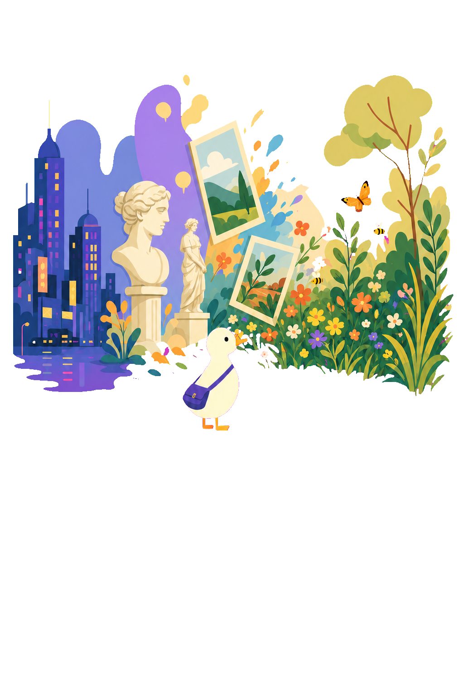

ColourTrainer Beta
Train your eye. Grow your colour vocabulary.
A simple and fun way to practise identifying colours, compare the differences between them, and learn a few useful things along the way.
ColourTrainer is an educational game. It is not a vision test, diagnosis, treatment, display-calibration tool, or evidence that your eyesight has changed.
Currently inBeta development
Invite coming laterTestFlight
Not yet on theApp Store
Learn by playing
Short challenges that make you look twice.
ColourTrainer turns colour comparison and vocabulary into relaxed five-to-eight-minute sessions. Difficulty adapts within the game, and “I cannot tell” is always a valid answer.
Spectrum Explorer
Find the family
Explore neighbouring colour families, notice where one seems to become another, and reveal descriptive vocabulary after each choice.
Tone Specialist
Spot the difference
Pick the odd tile while the game changes one controlled quality at a time: hue, lightness, or chroma.
Colour in Motion
Practise amid real-world noise
Build towards familiar colour tasks in increasingly lively scenes, without treating decorative artwork as a colour reference.
Why practise colour?
Colour is something the visual system can learn about.
The research supports a modest idea: repeated, specific practice can change performance on colour tasks, and learning names can shape how adults categorise what they see. It does not show that a phone game can clinically improve eyesight.
Practise fine differences
A 2024 study found lower colour-discrimination thresholds after five days of repeated practice. The effects were strongest around trained colours, and the authors also observed shifts in colour appearance and category boundaries.
Read the Scientific Reports studyLearn useful distinctions
Adults trained on newly named green and blue subcategories learned the labels quickly; behavioural and brain-imaging results showed that category learning can influence colour processing.
Read the PNAS studyBuild vocabulary and attention
Putting words to lightness, chroma, hue, and neighbouring families gives you a repeatable way to compare colours—useful for conversation, art, design, shopping, nature, and simple curiosity.
This is a practical inference from discrimination and category-learning research, not a promised outcome.
What “training” means here
It means practising a task and learning language for it. Improvements may be specific to the trained colours, task, display, or viewing context. ColourTrainer reports performance only inside the trainer.
Including colour-vision deficiency
Practice can support strategies; it cannot replace cone function.
People with colour-vision deficiency may still enjoy the vocabulary, comparison, and self-paced practice. Research reports that dichromatic observers can often name colours accurately by learning subtle visual cues and shared language, even when particular hues remain difficult to discriminate.
That can make training useful as practice in noticing available cues and learning labels. It is not a cure, treatment, screening tool, or promise of normal colour vision.
Sources, standards, and naming
Reference data is useful—not universal truth.
ColourTrainer uses published technical references to generate reproducible on-screen exercises. Those references do not make a phone a calibrated instrument or settle what every person should call a colour.
Data referenceW3C CSS Color Module Level 4
The app uses a 23 July 2026 snapshot of the CSS named-colour table for stable English identifiers and exact sRGB samples. W3C does not define ColourTrainer’s family boundaries, curriculum, descriptions, or cultural meanings.
W3C named coloursColour mathsOKLab, OKLCH, sRGB, and CIEDE2000
Challenges are authored in OKLCH, converted to tested sRGB output, and may use CIEDE2000 to describe a displayed pair. Numeric distance guides generation; it does not guarantee identical perception.
OKLab referenceDisplay guidanceApple support documentation
Guidance about colour-changing display settings draws on Apple’s descriptions of Night Shift and Colour Filters. The app cannot infer every display, accessibility, lighting, or environmental condition.
Night ShiftColour FiltersNaming researchWorld Color Survey
Large cross-language studies find shared motifs as well as real diversity within and between languages. Colour names and boundaries can vary with language, community, culture, and individual experience.
Read the PNAS studyMaterial copied from or derived from CSS Color Module Level 4 is copyright © 2026 World Wide Web Consortium and used under the W3C Software and Document Notice and License.
Availability
The beta is being prepared.
Important notes